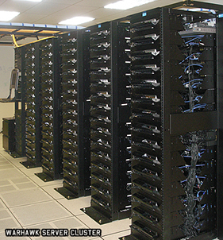

My Work
Projects I have worked on include the following.
Video Game Servers
Maintaining video game servers for my friends, including editing different configuration files that affect how the game works.
Internship
Internship at a technology company that involved the assembly and installation of sensors/radars on planes.
University Papers and Other Work
I did several philosophy papers dealing with difficult subjects, as well as presentations and papers in history and discussing nuclear energy. One of the websites I used for researching nuclear energy can be seen below.
U.S. Department of EnergySubjects Covered
| Philosophy | History | Science |
Skills That I Have
- Hard-Working
- Precise
- Focused